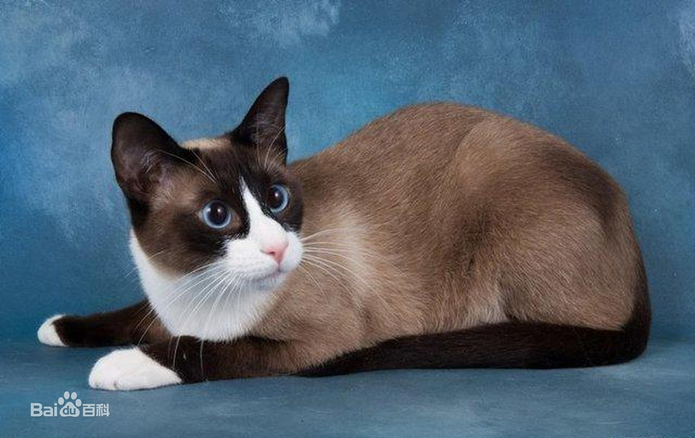

| 名称 | 介绍 | 描述 |
|---|---|---|
| 雪鞋猫 | 原产于俄国。【祖先】美国短毛猫与暹罗猫杂交，起源于19世纪60年代。【个性】活泼好动，性格温顺。【耳朵】大而尖。【眼睛】呈杏仁形， 深蓝色。【头部】稍圆的三角形，鼻子长短适中。【被毛】毛短，短而光滑有光泽，毛色略带蓝白色，有重点色。【足掌】爪大小适中，圆形， 像缅甸猫。雪鞋猫肌肉发达，体形较大的特征是由美国短毛猫血统造成。而其身长则显现出暹罗猫的特征。公猫往往明显比母猫大，体重可达 5.4kg。【特征】白色区重叠于传统暹罗猫图案之上，带有这种斑纹颜色的品种正越来越受到培育。前腿上“连指手套”必须达到脚踝，并在后腿上 正好延伸至后腿的跗关节下。年龄较大些的猫往往颜色深一点，但关键是重点色和体色要形成对比。附注：仔猫出年是白色，要2年时间才能 长出清楚的斑纹。毛型短而光滑。 |
 |